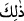

kadar sâdık kalamaz. Çünkü Allah Teâlâ sözünde durmaya daima kadirdir. O’nun
dışındakiler ise Allah muvaffak kılmadığı sürece bundan âcizdirler. Nitekim et-
Te’vîlâtü’n-Necmiyye’de bu şekilde açıklanmıştır.
“O halde O’nunla yaptığınız bu alış verişinize sevinin.” Yani böyle olduğu zaman,
nâil olduğunuz cennete sevinebildiğiniz kadar sevinin, ferahlayabildiğiniz kadar
ferahlayın.
Kişinin sevinmesi, alış verişin kendisini cennete götürmesi bakımından olduğu halde
âyette “alış verişinize sevinin” denilmesinin gâyesi, onları alış veriş olarak ifâde
edilen cihada teşvik etmektir.
Yapılan bu akid âyette “şirâ (satın alma) olarak zikredilmedi. Çünkü satın alma işi
onlar tarafından değil, Allah tarafından yapılmaktadır. Teşvik ise ancak onlar tarafından
yerine getirilecek hususlarda yapılır.
Haddâdî der ki: “Canlarınızı Allah’a satmanıza sevinin. Çünkü Allah’tan daha kadri
yüce bir müşteri, cennetten de daha yüksek bedel yoktur.”
Âyette özellikle “O’nunla yaptığınız bu alış verişinize” buyurulması, müminlerin
yaptığı bu alış verişi daha da pekiştirmek ve bunun diğer alış verişlere benzemediğini
bildirmek içindir. Çünkü bu alış verişte fânî olan verilip bâkî olan alınmaktadır. Ayrıca
her iki bedel de aslında Allah Sübhânehû ve Teâlâ’ya aittir.
“Gerçekten bu,” yâni, müminlerin feda ettikleri can ve mallarının mukabilinde
kendilerine verilen cennet, “büyük başarıdır.” Ondan daha büyük başarı yoktur.
Haddâdî demiştir ki: İşte bu, büyük kurtuluştur, çok bol mükafaattır. Çünkü bu, fânî
can ile bâki cenneti elde etmektir.
Âyetteki “
(bu)” işâret isminin, müminlerin sevinmekle emrolundukları alış verişe
işaret olması da mümkündür. Bu takdirde bu alış veriş büyük başarı kabul edilmiş, hatta
bizzat başarının kendisi sayılmış olur.
Bilesin ki bütün kâinat Allah’ın mülkü, bütün insanlar da O’nun kullarıdır. Allah
mülkünde ve kulları hakkında dilediğini yapar. “O yaptığından sorumlu tutulamaz,
onlar ise sorumlu tutulacaklardır.” (el-Enbiyâ, 21/23) “Allah, niçin murad etmedi,
neden olmuyor?” denilemez. Bununla birlikte O, katından bir lütuf olarak müminlerin
canlarını, yüce katında değerli oldukları için satın almıştır.
Yine bilesin ki ecel, hükme bağlanmıştır ve kesinleşmiştir. Rızık, paylaştırılmıştır ve
bellidir. Nasib olmayan elde edilemez. Herkesin belirlenen payı ise kendisine ulaşır.
“Her can ölümü tadacaktır.” (el-Enbiyâ, 21/35) Ezelde takdir edilen bir şey, mutlaka
gerçekleşir. “Cennet kılıçların gölgeleri altındadır.”[289] En büyük doyma ve kanma,
ölüm kadehlerinden içmededir. Ayakları Allah yolunda tozlanan bir kimseye, Allah ateşi
haram kılar.
Bir dinar infak eden kimseye yedi yüz dinar, bir başka rivayette de yedi yüz bin
dinar sevabı yazılır.[290]
Şehidler Allah katında gerçek diridirler. Onların ruhları, yeşil kuşların